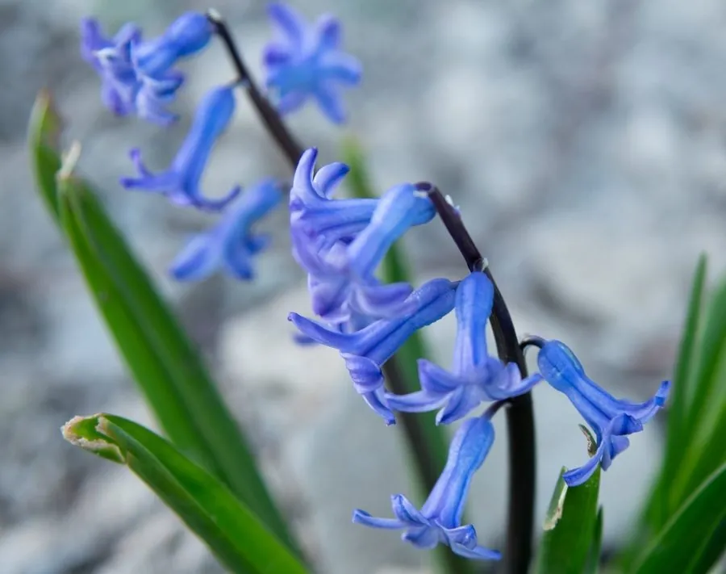

花卉与草本 · 植物界
风信子 Hyacinthus orientalis

天门冬科多年生球根花卉，花序密集、香气浓郁，色彩明快，是早春盆栽、水培观赏的常见花卉，荷兰为世界主产区。
- 分类
- 门被子植物门纲木兰纲目天门冬目科天门冬科属风信子属
- 栖息环境
- 地中海东岸及小亚细亚的向阳山坡与草坡，喜凉爽、阳光充足
- 地理分布
- 原产地中海东部与小亚细亚，荷兰、土耳其及中国各地广泛栽培
- 保护级别
- 暂无评估
物种志
风信子为天门冬科风信子属多年生球根草本，株高 15–45 厘米，鳞茎球形，外被紫色或白色膜质皮。叶片基生，肥厚带状，长 15–30 厘米。总状花序由数十朵小花密集成穗状，花冠漏斗形，6 裂，有蓝、紫、粉、红、白、黄等色，香气浓郁，花期 3–4 月，果期 5 月。
风信子原产地中海东部及小亚细亚一带，喜凉爽湿润和充足阳光，秋季生根、早春开花，夏季地上部分枯萎进入休眠。它耐寒性尚可，但花芽分化需要低温处理，栽培中常用冷藏种球控制花期；水培时只需将鳞茎底部接触水面即可生根开花。荷兰哈勒姆一带的花田以风信子、郁金香连片种植闻名，鳞茎含生物碱，误食可能引起中毒，室内摆放时宜保持通风。
形态与习性
- 株高15–45 厘米
- 花期3–4 月，单穗花期约 2–3 周
- 果期5 月，蒴果球形
- 光照喜光，生长期需充足阳光
- 水分喜湿润，盆栽忌积水
- 土壤疏松肥沃、排水良好的沙质土，pH 6–7
- 繁殖以分球繁殖为主
- 主要用途盆栽、水培观赏与切花
趣味知识
- 风信子一个花序可开数十朵小花，香气浓郁，少数人对花香比较敏感。
- 风信子鳞茎含生物碱，误食会中毒，处理种球后应洗手。
- 荷兰哈勒姆附近的花田每年春季以风信子与郁金香花海闻名。
- 水培风信子时只要鳞茎底部接触水面，根系就会向下生长。